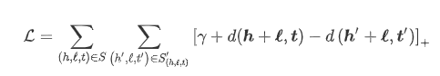
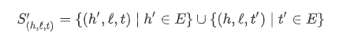
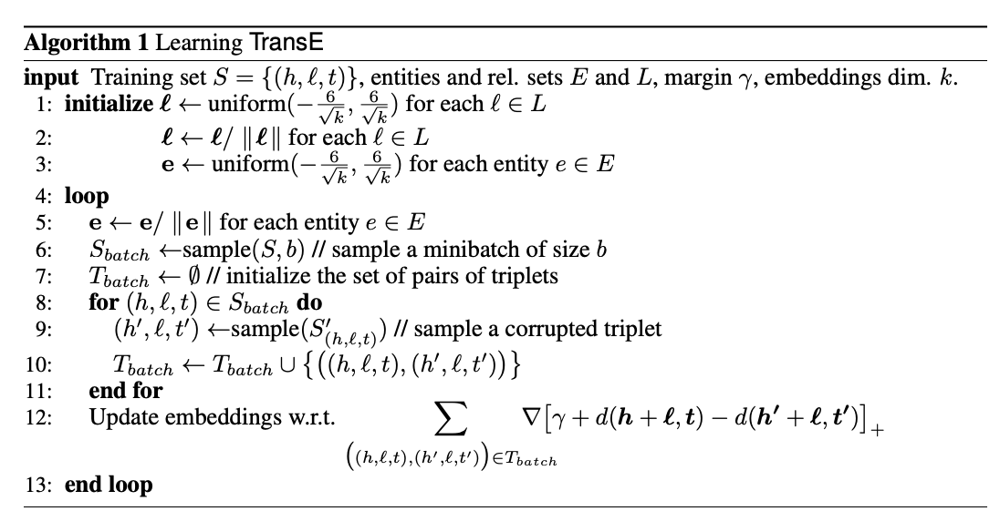
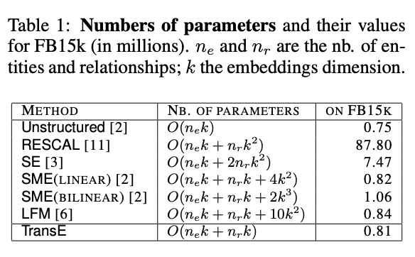

论文阅读笔记5：TransE
论文阅读笔记5：TransE
论文《Translating Embeddings for Modeling Multi-Realtional Data》阅读笔记
老生常谈的Introduction
将关系和实体用低维向量进行表示是一个很常见的问题(这个时候知识图谱的概念还没有提出)，而关系和实体可以使用一个三元组(head, realtion, tail)来表示，而在多关系的数据中，关系可能有很多个并且是异构的，这个时候传统的方法就不太好用了。
这篇论文中提出了一种基于Translation(转化)的思想，首先将一系列实体表示成向量空间中的一系列向量，然后将relation看成是从head到tail的一种translation，这样的方法可以大幅度减少参数的规模，并在处理一对一的关系中取得了非常好的表现，但是在处理一对多，多对一和多对多的关系中表现并不好，因为TransE模型中只把关系和实体都表示成一个向量，所以不好表示含多个实体的关系。
Trans模型的具体描述
基本的定义
假设训练集S包含一系列三元组
学习的目标
为了学习到满足

其中

是一个负采样集合，是将训练集中的三元组改变其head或者tail生成一个坏样本产生的，并且损失函数希望正常样本的能量要比坏样本的能量要低，因此负采样起到了这样一种监督作用，同时学习过程中的优化采用SGD完成。
具体算法
TransE模型的具体算法如下：

- 首先按照一定的方式对参数进行初始化，然后开始不断的迭代优化过程
- 每一轮迭代过程中，首先要将实体的嵌入向量标准化，然后使用采样的一小批三元组进行训练，训练的过程中首先需要给每个三元组生成一个负样本，然后使用常数学习率更新参数
相关工作比较和metric选取
相关模型的比较
相比于其他已经存在的模型，TransE的参数亮可以说少的离谱，我们假设实体和关系都使用k维的向量来表示，则各个模型的参数量对比如下：

参数少使得TransE的训练变得简单，可以避免欠拟合的问题(即因为数据太少而不够学)，
metric的选取
之前讲到
注意到算法中我们将向量都进行了标准化，因此h和t的L2范数都是1，而l在一对正负样本的比较之间不起任何作用，因此只需要考虑
缺点与不足
TransE模型的实体和关系都只用了一个向量进行表示，而这样的表示方式在涉及到一对多，多对一，多对多的场景下学习的效果就不太好
实验
TransE论文中对wordnet和Freebase等数据集上进行了一系列实验，并在链接预测等任务中和一系列baseline进行了比较。具体的就不关注了，反正就是TransE很强(2013年限定)